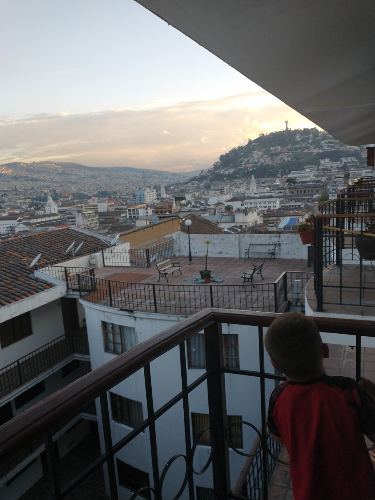

Creating Safety Plans Without Turning a Home Into a Locked Facility
Protecting someone while preserving the choices, privacy, and belonging that make a home.

A useful safety plan identifies a particular risk, agrees on the support needed, and checks whether that support is working without unnecessarily shrinking the person’s life. It should explain how the adult can move around, make choices, enjoy privacy, and ask for change, as well as what happens in an emergency.
Sometimes a person needs substantial supervision or a carefully assessed protective measure. That deserves serious planning. It does not mean every resident should lose the same freedoms, or that a restriction should remain forever simply because nobody has revisited it.
Families do not have to choose between ignoring danger and accepting every restriction proposed in the name of safety. They can ask for the reasoning, the alternatives, the relevant local authority, and a review process that includes the adult.
Six months in Quito
We spent six months in a townhouse in a fourth-floor walk-up apartment complex in historic Quito. The views from our Airbnb were amazing. The doors and windows locked from the inside, and the apartment’s front door had a separate lock that was too high for Sam to reach. There was also the time it would take him to get down all those stairs.
Because we stayed so long, we made friends with the other residents. Everybody knew Sam and knew where we were staying. Thankfully, we never had a major escape incident there. The experience made me think about both the physical setting and the familiarity that grew from being part of the building’s everyday life.
That is a family experience, not a building specification for Casa de SAM. Stairs and hard-to-reach locks can create accessibility and evacuation problems; a future residential home needs appropriate professional assessment, lawful safeguards, and safe emergency exits. The part of Quito I want to carry into the vision is people who know one another alongside a professionally assessed environment. Safety can include that warmth and familiarity while still respecting each person’s privacy and freedom.
Describe the risk in a way someone can examine
“Needs a secure environment” is too broad to guide a decision. Ask what harm is being prevented, where it may occur, what has actually happened, and what support was present at the time. Separate documented events from concerns that have not yet been assessed.
For example, difficulty navigating a nearby road raises questions about travel support, routes, communication, and the transition out of the home. It does not automatically answer whether the person should have unrestricted access to a kitchen, garden, or private room. This is a planning example, not a recommendation for an unknown individual.
Where unsafe leaving is a concern, begin with Preventing Elopement in Homes for Autistic Adults. The plan should address the adult’s circumstances rather than treating autism itself as a reason to lock a door.
Ask whose account is included. What does the adult say or communicate about the situation? What do different supporters observe? If accounts differ, record the uncertainty instead of silently choosing the most restrictive interpretation.
Compare support options before choosing a restriction
Create a short comparison with the adult and relevant professionals. For each possible approach, note the intended benefit, its limits, the resources needed, and how it could affect ordinary life.
Options to discuss might include a clearer way to request assistance, different staffing at a difficult transition, a less overwhelming environment, or planned support for an activity the person wants. These possibilities need individual assessment; they are not substitutes for urgent protection when someone is in immediate danger.
The U.S. Administration for Community Living’s person-centered planning guidance keeps the person’s preferences and desired life central to planning. For this comparison, ask both “What risk might this reduce?” and “What would this allow the adult to do?”
Be realistic about staffing. An option that depends on a worker being available must have actual coverage, not an unfunded promise. If an arrangement is currently unavailable, identify that as a gap to resolve rather than pretending the plan is complete.
Look beyond the front door
A home can become restrictive through many small rules: outdoor time only at staff convenience, visitors discouraged, personal belongings kept out of reach, or everyone required to follow the same bedtime. Each may be described as practical. Together they can leave little room for the adult’s own life.
Walk through an ordinary day and ask what the person can choose. Can they decide where to sit, whom to spend time with, and when to take a break? How do they ask to change an activity? What happens when they disagree?
There may be legitimate reasons for some arrangements. The point is to make them visible and explain them individually. Avoid extending one person’s assessed need into a permanent household-wide rule without considering the effect on everyone else.
Balancing Safety, Privacy, and Independence in Residential Care explores these trade-offs. Privacy and support can coexist when people plan carefully rather than treating supervision as permission to observe everything.
Get the right advice about restrictive measures
Consent, decision-making authority, safeguarding, and restrictions on movement are location-specific matters. A family preference or signed provider form should not be assumed to settle all of them. Ask qualified local professionals what assessment, authorization, documentation, and independent review are needed.
As an example from England, the Care Quality Commission’s Regulation 13 guidance addresses unnecessary or disproportionate restraint and deprivation of liberty without lawful authority. It is not Paraguayan law. It illustrates why “we do this for safety” is not a sufficient explanation on its own.
Do not use this article as instructions to add or remove locks, restraint, or supervision. A change can introduce serious risks in either direction. Existing arrangements that cause concern need prompt review by the appropriate people, with urgent safeguarding or emergency help when someone is at immediate risk.
Treat fire safety as part of the same conversation
A measure intended to prevent unsafe leaving must not be considered separately from evacuation. Ask how every resident and worker would get out, including at night or when the usual caregiver is absent. Changes to locks, gates, alarms, or access controls need review for the actual building and its occupants.
The U.S. Fire Administration’s guidance for people with disabilities highlights escape planning and the help a person may need. A local fire-safety professional can advise on the particular property; general guidance cannot certify a design.
Ask how an agreed plan is practiced in a way that is accessible and does not deliberately overwhelm residents. Also ask who follows up when a drill reveals that an assumption about staffing, equipment, or communication is wrong.
Put review and accountability in writing
A safety plan needs a way to change. For any significant protective measure, ask the team to record:
- The specific concern and the information supporting it.
- The adult’s views, preferences, and communication support.
- The options considered and why the current approach was chosen.
- Who is responsible for implementation and any required authorization.
- What effect the measure has on daily life and privacy.
- What would prompt an earlier review, and who can request it.
- The next review date and the person responsible for arranging it.
Ask how the adult can raise a concern outside the immediate care relationship. An accessible complaints or advocacy route matters, particularly when the person depends on staff for daily assistance. Verify what services actually exist locally rather than listing an unavailable resource as reassurance.
What You Can Do This Week
Choose one rule or precaution that affects daily life. Ask why it exists, whom it applies to, and when it was last reviewed. Write down the answer without assuming in advance that the measure is either necessary or wrong.
Then identify one everyday choice the adult would like more support to make. Bring that goal into the same conversation as safety. Ask who can help assess a workable next step and what information they need.
If a door or other building feature raises concerns, arrange a qualified local review rather than experimenting with it. You can begin improving the plan this week without making an unsafe change today.
Long-Term Questions
Will the plan remain appropriate as the adult’s preferences, health, or surroundings change? What happens when staff turnover brings in people who were not part of the original decision? Can someone explain why each measure remains, or has the household simply become used to it?
Look for evidence of a life being supported: chosen activities, relationships, comfortable routines, and opportunities to go out with the help needed. A record with few incidents is important, but it is not a complete description of someone’s experience at home.
Why Casa de SAM Is Building Homes, Not an Institution explains the vision behind this distinction. The practical work is to make safety and a meaningful home life part of the same plan.
About Casa de SAM
Casa de SAM is a developing vision for a lifelong residential community in Paraguay for adults with developmental disabilities who need ongoing support. It is in its planning and organisational stage, with a long-term opening goal of 2035. It is not an operating residential provider, is not yet a registered nonprofit, and is not currently accepting donations.
The proposed community would need individual assessments, suitable buildings, dependable staff, and locally appropriate safeguards. A welcoming vision does not remove that responsibility. It gives the planning a clear purpose: a home where the person belongs and receives the help they need.
Sources checked November 1, 2026. Educational information only, not legal advice, authorization for a restrictive practice, or a fire-safety assessment. England and U.S. sources are examples within their jurisdictions, not rules for Paraguay. Consult qualified local professionals before changing restrictive measures, evacuation arrangements, or individual care plans.